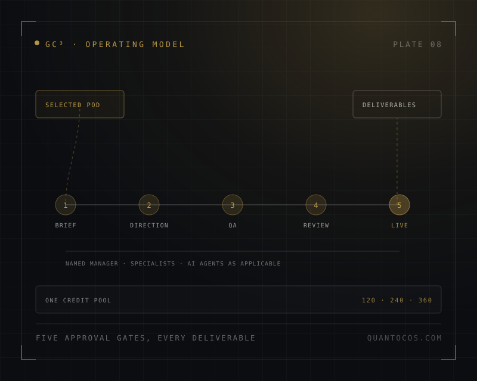

Week 1
Monday brief
The week's work is confirmed against the approved scope.
How it works
Every engagement moves through the same five stages and the same five gates, whatever the track. The sequence is the product: it is how a distributed pod stays accountable to a client.

GC³ capability subscriptionThe friction
01
Without a written brief, the pod produces against an assumption and the estimate is meaningless.
02
Feedback arrives when the work is built, so every comment becomes a rebuild.
03
Credits are spent without a running total, and the invoice is the first signal.
The five stages
The stages are fixed. What changes per track is the work inside them, not the sequence.
The outcome, audience, constraints and deadline are written into a brief.
The pod presents a route; you select one at G2.
Specialists build against the selected direction.
Internal QA at G3, then your review at G4.
G5 releases the files, sources and handover notes.
The gates
Gates exist to stop silent drift. Each one has an owner, a record and a clear question, so work cannot move forward on an assumption.
What a month looks like
Week 1
The week's work is confirmed against the approved scope.
Weekly
A short working session on what moved and what is blocked.
Ledger
The running balance is shared before it becomes a problem.
Monthly
What was delivered, what was drawn and what remains.
Boundary
Scope and credits are adjusted at the billing boundary.
Change
Any change to scope is priced and approved before work starts.
The first two weeks
Onboarding, brand ingestion, brief clarification and asset handover are not charged as extras.
A working session to confirm the outcome, approver and calendar.
Brand material, systems access and review paths are set up.
One real deliverable is scoped and approved at G1.
The first piece moves through G2 to G3 within the agreed window.
Questions
The sequence is only useful if the rules around it are clear.
The first brief is usually ready in the first week, and the first deliverable moves through the gates in the second. Exact timing depends on access and approvals.
G4 is your review window, not our delivery promise. The window is agreed in the engagement letter and recorded at each deliverable.
The work waits. A missed gate does not silently consume credits; the pod re-plans at the next review.
Next step
We will run the first cycle with you and show where each gate sits before you commit to a month.
Quantocos Global Systems LLP · GC³ · services under a written engagement letter